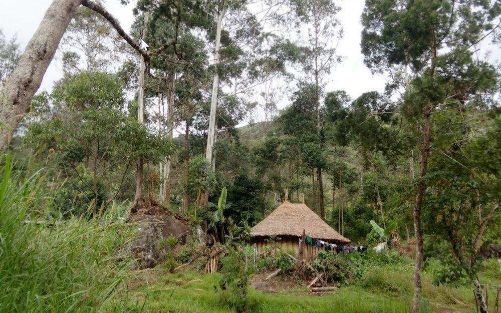
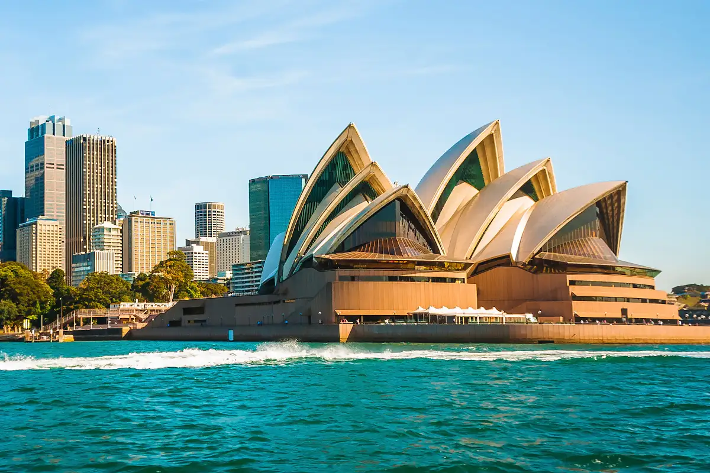
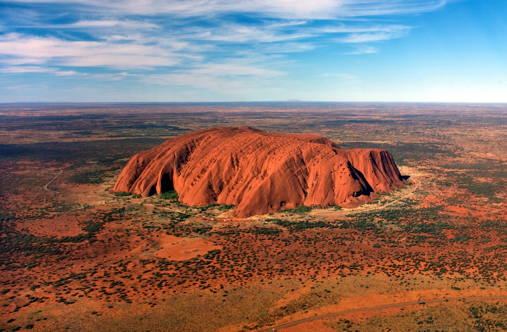
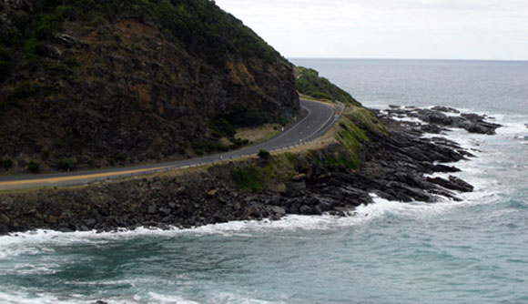
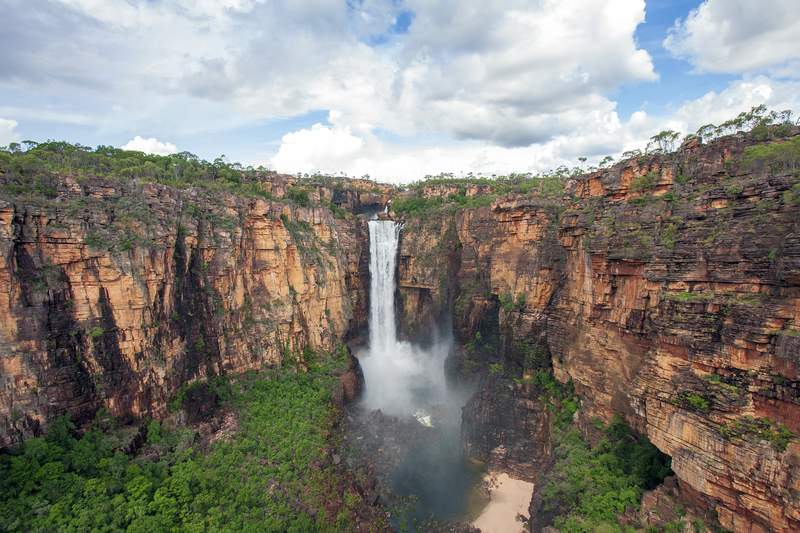
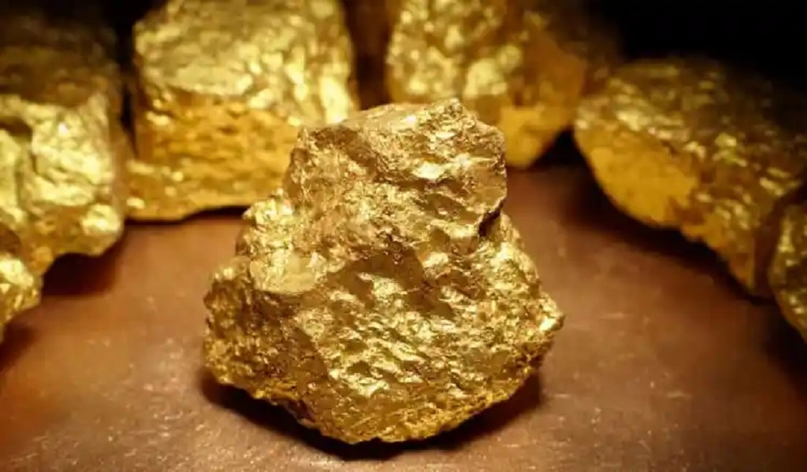
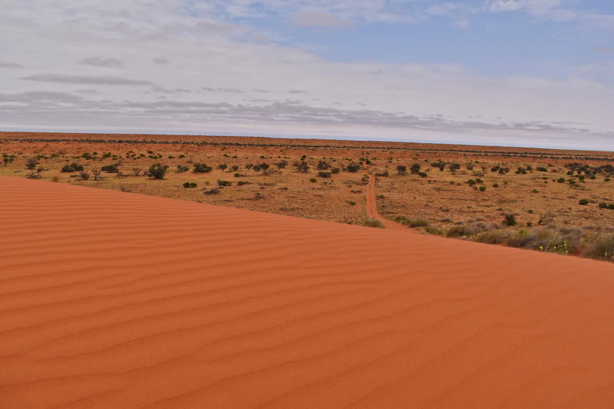
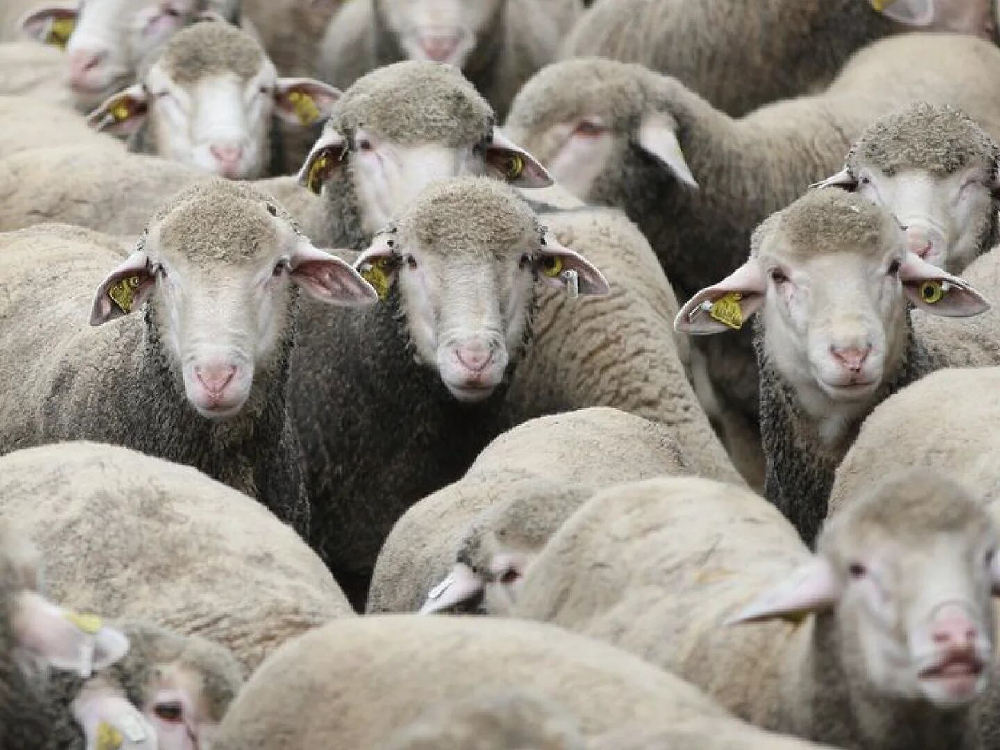

Descripcion del pais
Papúa Nueva Guinea, oficialmente el Estado Independiente de Papúa Nueva Guinea, es un país ubicado en Oceanía, que ocupa la mitad oriental de la isla de Nueva Guinea y varias islas adyacentes en el Pacífico. Su capital es Port Moresby. Es uno de los países más diversos del mundo, tanto en términos culturales como lingüísticos, con más de 800 lenguas habladas. Gran parte de su población vive en áreas rurales y remotas, manteniendo estilos de vida tradicionales. Papúa Nueva Guinea es conocida por su impresionante biodiversidad, que incluye selvas tropicales, montañas, volcanes activos y arrecifes de coral. El país también cuenta con una rica tradición de arte y ceremonias culturales, como el Sing-Sing, donde diferentes tribus se reúnen para mostrar sus vestimentas tradicionales, danzas y música.
5 lugares para ir de vacaciones
1. Valle de Wahgi
El Valle de Wahgi, ubicado en las tierras altas de Papúa Nueva Guinea, es famoso por sus exuberantes paisajes verdes y su rica cultura tribal. Los visitantes pueden experimentar la vida en las aldeas tradicionales y asistir a un Sing-Sing, un festival en el que diferentes tribus muestran sus coloridas vestimentas, danzas y música. El valle también es conocido por su historia arqueológica, con sitios que datan de miles de años.
2. Isla de Nueva Bretaña
Nueva Bretaña es una de las islas más grandes de Papúa Nueva Guinea y es conocida por su impresionante belleza natural. Los turistas pueden explorar los volcanes activos de Rabaul, bucear en los vibrantes arrecifes de coral, y disfrutar de las playas de arena blanca. La isla también es rica en historia de la Segunda Guerra Mundial, con numerosos restos de aviones y barcos hundidos que atraen a los entusiastas de la historia y el buceo.
3. Parque Nacional Kokoda Track
El Kokoda Track es una de las rutas de senderismo más famosas del mundo, que atraviesa la densa jungla montañosa de Papúa Nueva Guinea. Este sendero de 96 kilómetros es conocido tanto por su desafiante terreno como por su importancia histórica durante la Segunda Guerra Mundial. Los excursionistas pueden experimentar la belleza natural de la región, así como la calidez de las aldeas locales y aprender sobre los eventos históricos que ocurrieron en este lugar.
4. Islas Trobriand
Las Islas Trobriand, también conocidas como las Islas del Amor, son famosas por su cultura única y sus costumbres sociales, que incluyen un enfoque liberal hacia la sexualidad. Estas islas remotas ofrecen playas vírgenes, aguas cristalinas y una rica cultura matrilineal. Los visitantes pueden participar en ceremonias tradicionales, aprender sobre el complejo sistema de intercambio Kula, y disfrutar de la hospitalidad de los habitantes locales.
5. Isla de Bougainville
Bougainville es una isla autónoma de Papúa Nueva Guinea, conocida por su impresionante paisaje volcánico, playas idílicas y rica biodiversidad. La isla ofrece oportunidades para el ecoturismo, incluyendo senderismo en las montañas, buceo en arrecifes prístinos, y la exploración de la vida silvestre local. Además, Bougainville tiene una historia reciente de lucha por la independencia, lo que añade una capa de interés cultural e histórico para los visitantes.
Datos curiosos
1. Diversidad Lingüística Única
Nueva Guinea es hogar de más de 1,000 lenguas diferentes, lo que la convierte en uno de los lugares con mayor diversidad lingüística en el mundo. Esta variedad se debe a la geografía montañosa de la isla, que ha mantenido a las comunidades aisladas durante siglos.
2. Prácticas Culturales Únicas
Papúa Nueva Guinea es famosa por sus prácticas culturales únicas, muchas de las cuales se han mantenido intactas durante miles de años. Uno de los eventos culturales más conocidos es el Sing-Sing, donde diferentes tribus se reúnen para mostrar su cultura a través de danzas, cantos y vestimentas tradicionales. Estos eventos son una oportunidad para que las tribus preserven y celebren sus identidades culturales.
3. Biodiversidad Asombrosa
Papúa Nueva Guinea alberga una biodiversidad increíblemente rica, con numerosas especies de plantas y animales que no se encuentran en ningún otro lugar del planeta. El país es hogar de selvas tropicales, montañas, y arrecifes de coral, lo que lo convierte en un destino ideal para los amantes de la naturaleza y los biólogos. La región es particularmente conocida por su variedad de aves del paraíso, que son emblemáticas de la fauna del país.
Quiz
¡Prueba tus conocimientos con este Quiz!
Gracias por participar
Tu puntaje fue: